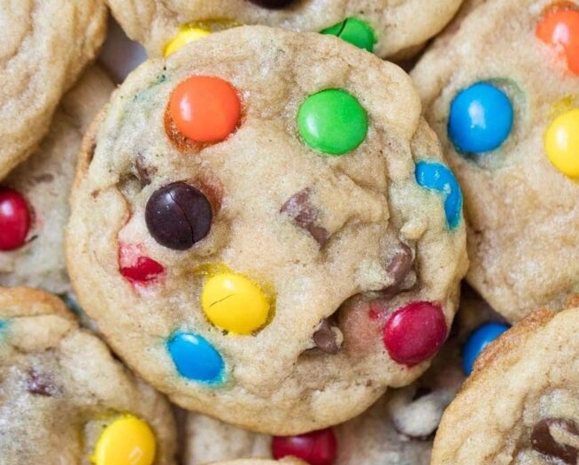

M&M Cookies

Description
Boiiii if you don't know bout these you mad sheltered! These bitches SLAPP!!
Ingredients
- 2 1/4 cups all purpose flour
- 8oz unsalted butter
- 1/2 cup white granulated sugar
- 3/4 cup brown sugar
- 2 large eggs (room temperature)
- 2 tsp vanilla extract
- 2 tsp salt
- 1 tsp baking soda
- M&M's candy
Directions
- Preheat oven to 375F
- Cream sugars and butter
- Mix in eggs and vanilla
- Mix dry ingredients and sift into wet
- Mix wet and dry till mostly uniform
- Mix in M&M's candy (However many you want... Feel it in your heart)
- Chill dough from 0-3hrs
- Line a 9x11" baking sheet with parchment paper
- Make and place roughly 1-1/2" dough balls roughly 1" apart on lined baking sheet
- Place sheet in oven and bake for 10-12 minutes